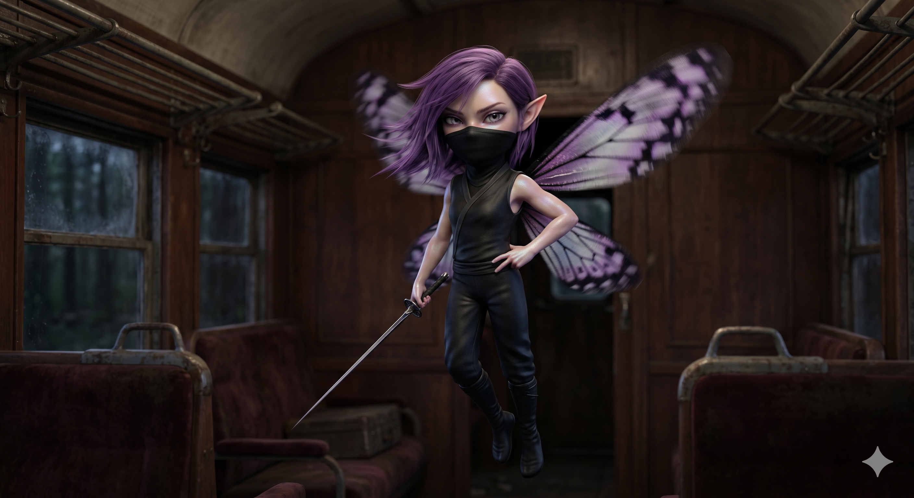

Appears in: Couch Potato Chaos, Couch Potato Crisis
Profile

-
Appears in: Couch Potato Chaos, Couch Potato Crisis
-
Aliases: Twinklebottom
-
Cross-book continuity: Appears in both books (antagonist in Chaos, uneasy ally in Crisis).
-
Role: Fairy ninja and leader of the Hidden Smog ninja village; one of the party’s most persistent and dangerous enemies in Chaos, and a reluctant member of the rescue party in Crisis.
-
Personality: Trista is a study in contradictions – a bite-sized fairy with the temperament of a caffeinated warlord. She is self-important, easily exasperated, and perpetually surrounded by subordinates she considers beneath her competence. Her leadership style oscillates between competent strategic planning (diversionary attacks, mercenary recruitment, job postings at capital cities) and utter disdain for the people executing her plans. She talks to her own ninjas like they are children who have disappointed her, and speaks to her enemies with the casual condescension of someone who has never once considered losing a fight. Her arrogance is not entirely unearned: she is blindingly fast, nearly invisible in flight, and deadly enough to stab Tasha through the eye, neck, and heart in a single engagement. Her one consistent weakness is a compulsion to gloat – she cannot resist delivering a speech when her opponent is dying, a habit that has cost her victories more than once. Off the battlefield, she relaxes by bathing in glasses of alcohol (vodka martinis are her preference), hugging olives like teddy bears and getting spectacularly drunk on amounts of booze that would barely wet a human’s lips. Beneath the bluster, she is pragmatic: she worked for Murderjoy because it was profitable, switched sides when the queen betrayed her, and agreed to protect Fin and Mara because Kiwi asked – not from sentiment, but because it was the right thing to do at the time (though she would never admit that). After her death and resurrection in Crisis, her personality is forcibly and permanently altered by Etheria’s respawn mechanic: her murderous, hard-edged persona is overwritten by a softer, sweeter, more compassionate self – “ooky-spooky sunshine and rainbows,” as her inner monologue puts it. She despises this transformation but cannot fight it, creating a character who is perpetually at war with her own niceness.
-
Backstory: Trista is the leader of the Hidden Smog ninja village, a settlement of shinobi for hire operating somewhere between Questgivria and Zhakara. How she rose to lead the village is unrecorded, but her combat record suggests she earned it through sheer lethality: she focuses exclusively on stealth attacks and weak-point strikes, and her small fairy frame makes the ninja class ideal for her, amplifying both her stealth and attack speed. Prior to her first appearance, Queen Murderjoy contracted the Hidden Smog village to kidnap Princess Kiwistafel – a job Trista took because it paid well and seemed straightforward. She coordinated the kidnapping from the outset: stationing guards at a tower, arranging mercenary recruitment in the capital city, and planning a diversionary assault on Questgivria’s blockade. Before becoming a cold-blooded killer, Trista’s previous life was as a kind, gentle soul – she spent three years volunteering at a nature preserve in Northern Questgivria before being trampled to death by the very wildlife she was protecting. She considers her resurrection as a murderous fairy ninja to be a significant upgrade.
-
Significant story events:
- Chapter 18 – Princess Rescue / Pre-Chapter 23 (Chaos): Trista’s first appearance. She arrives at the tower where her subordinates are holding [Princess Kiwi](./character-princess-kiwistafel-questgiver.html), immediately berating them for letting the captive sing (which could attract rescuers). She introduces herself to Kiwi with the observation that “you’re supposed to be screaming and crying and shit,” establishing her adversarial-but-exasperated dynamic. She then departs to set up the diversionary force at the southern blockade, demonstrating genuine tactical competence.
- Chapter 23 – Twinklebottom’s Fury (Chaos): The chapter named after her. Trista intercepts the party with over a hundred ninja clones and demands they surrender the princess. When Hermes opens fire, she orders the attack while casually announcing she’ll be “over by that tree taking a nap.” After Kiwi’s Tempest spell clears the clones, Trista engages Tasha directly – stabbing her in the eye, neck, and heart in rapid succession. She stops to gloat (“Nobody takes the adorable purple-haired fairy seriously because she’s bite sized”), allowing Tasha to heal with a health potion. Tasha uses Stat Shuffle to match Trista’s speed, tears off one of her wings, and bashes her with a rock. Trista barely escapes, crawling away and trying to fly with one wing.
- Chapter 31 – Scheming Schemers and the Schemes They Scheme (Chaos): Trista is revealed to have survived and is now working directly with Murderjoy’s agents, scheming to recapture the princess. She coordinates a second kidnapping attempt, demonstrating that her defeat at Tasha’s hands has not diminished her operational capacity – only her pride.
- Chapter 34 – Rumble on the Belcross Express (Chaos): Trista boards the Belcross Express with a full complement of ninjas, having rigged the train to crash into Belcross City after killing the conductor. She holds a needlelike sword to [Princess Kiwi](./character-princess-kiwistafel-questgiver.html)'s throat. When her ninjas are defeated, she attempts to flee but is swallowed whole by Henimaru’s sticky tongue – he coughs her back up moments later, but the delay allows Tasha to trap her in a glass jar. She remains imprisoned in the jar for weeks, carried in Tasha’s inventory.
- Chapter 37-39 – Orb of Life Quest / Spiral Tower (Chaos): During the final confrontation with Queen Murderjoy at the Spiral Tower, Trista (still a prisoner) sacrifices her own life to revive Tasha’s fallen companions – an act motivated not by kindness but by the fact that Murderjoy betrayed her first. She dies and enters Oblivion.
- Chapter 4 – Return of Twinklebottom (Crisis): A full chapter dedicated to Trista’s resurrection. She respawns at the save point in the Bog of Most Likely Death, but Etheria’s respawn mechanic has overwritten her personality: instead of a murderous ninja, she is now appallingly sweet, demure, and kind. She fights against this transformation with every fiber of her being, but the new personality is inescapable. She discovers the aftermath of the Spiral Tower battle, finds Pan’s portable hole (left behind), and hides inside it. When Gelkorus warps away with Zabrelvamier the dragon’s corpse, she is accidentally transported to Zhakara inside the portable hole.
- Chapter 5 – Crisis (Crisis): Trista arrives in Zhakara inside the portable hole, which ends up in Pan’s possession. When Pan discovers her, Trista has already shifted into her new personality, speaking in terms like “oh my!” and “dumplings.” She begins traveling with Fin, Mara, and eventually Kiwi.
- Chapter 12 – McBreakfast Sandwiches (Crisis): Trista travels with Kiwi, Fin, and Mara through the wilderness, riding in Mara’s pocket. When Gelkorus arrives to recapture Kiwi, Kiwi tells Trista: “You can’t save me. There are things we can do, and things we cannot do. You can protect the kids.” Trista agrees: “I’ll do it. You don’t need to worry about Fin and Mara.” This moment transforms her from enemy to protector.
- Chapter 25 – The Gathering / War Council (Crisis): Trista volunteers for the strike team to rescue Kiwi from Zhakara: “If you’re going to save Kiwi, count me in.” The fairy who once tried to kill Tasha and kidnap Kiwi is now part of the team racing to save her – a full arc from antagonist to ally.
-
Notable Quotes:
“Idiots! I’m surrounded by morons! Let me explain this to you. She’s. Trying. To. Escape. Anyone within miles will be able to hear her voice.” – Chapter 18, Princess Rescue (Chaos). Trista berating her subordinates for letting Kiwi sing.
“You’re not supposed to be complimenting your kidnappers. Don’t you know that’s a basic violation of victim-kidnapper etiquette? You’re supposed to be screaming and crying and shit.” – Chapter 18, Princess Rescue (Chaos). Trista’s exasperation with [Princess Kiwi](./character-princess-kiwistafel-questgiver.html)'s cooperation.
“All you big people assume that I’m weak just because I’m small. Being a ninja isn’t about strength – it’s about stealth, the element of surprise, and speed. Nobody takes the adorable purple-haired fairy seriously because she’s bite sized.” – Chapter 23, Twinklebottom’s Fury (Chaos). Trista’s monologue while stabbing Tasha through the heart.
“Underlings! Capture the princess and kill everyone else. I’ll be over by that tree taking a nap.” – Chapter 23, Twinklebottom’s Fury (Chaos). Trista’s approach to battlefield management.
“No! Snap out of it Twinklebottom! You are a cold-blooded homicidal maniac for hire. This woman in front of you looks more like a flower arranger than a shinobi. Resist the pull, Twinklebottom, resist!” – Chapter 4, Return of Twinklebottom (Crisis). Trista’s internal monologue as her new personality tries to overwrite her old one.
“Oh dumplings. What mean and uncute things I said to that nice human. She went to such lengths to take care of me and even kept me in a cozy little bottle for my protection.” – Chapter 4, Return of Twinklebottom (Crisis). Trista’s new personality reinterpreting her imprisonment.
-
Physical description: A tiny fairy, approximately six inches tall when hovering at human eye level – small enough to fit comfortably inside a glass jar or ride in someone’s pocket. She has purple hair, insect-like wings (described as butterfly-like in her respawn vision), and a lean, aerodynamic build optimised for speed and stealth. Her ninja attire is black and form-fitting, designed for zero drag and maximum mobility. She carries a needlelike sword – long and thin relative to her body, perfectly sized for piercing weak points (eyes, neck, heart). Her facial expressions oscillate between haughty disdain and theatrical exasperation; she is perpetually either rolling her eyes or throwing her tiny hands in the air. After her respawn in Crisis, she trades her dark ninja gear for simple white fairy-sized shorts and a shirt with slits for her wings, and her expression shifts toward wide-eyed, bewildered sweetness – a visual transformation that mirrors her personality overwrite.
-
Relationships:
- [Tasha Singleton](./character-tasha-singleton.html): Arch-enemy turned uneasy ally. Tasha trapped Trista in a jar, tore off her wing, and bashed her with a rock; Trista stabbed Tasha through the eye, neck, and heart. They have one of the most violently personal rivalries in the series. By Crisis, the respawn has softened Trista enough that she volunteers for Tasha’s rescue mission, though she still harbours resentment about the jar (“Who puts a fairy in a bottle? That had to be some kind of fairy rights violation”).
- [Queen [Aralynn Murderjoy](./character-queen-aralynn-murderjoy.html)](./character-queen-aralynn-murderjoy.html): Former employer turned betrayer. Trista worked for Murderjoy on the Kiwi kidnapping contract and was betrayed during the Spiral Tower battle. Her death was directly caused by the queen’s double-cross, and she planned elaborate revenge (a custom-built giant jar filled with Bog of Most Likely Death water for Tasha, followed by vengeance on the queen). By Crisis, the respawn has blunted her rage, but she still recognises the betrayal.
- Princess Kiwistafel: Former kidnapping target turned protector. Trista orchestrated Kiwi’s capture, held a sword to her throat, and tried to have her assassinated – all strictly business. After respawning, Kiwi’s instruction to “protect the kids” gave Trista a new mission that she accepted without hesitation, marking the turning point from villain to ally.
- Fin and Mara: Protégés and charges. After Kiwi’s recapture, Trista assumes guardianship of the two children, riding in Mara’s pocket and providing tactical commentary. Her relationship with them is the most genuinely unselfish dynamic in her character arc – she has no obligation to protect them, yet she does so because Kiwi asked.
- Gelkorus: Indirect connection. Trista was accidentally transported to Zhakara inside Pan’s portable hole when Gelkorus warped away with the dragon corpse. She was hiding from him at the time.
- Henimaru: The toad-person who swallowed her whole during the Belcross Express battle. A brief but humiliating encounter that contributed to her capture.
-
References: Couch Potato Chaos: Chapter 18 - Princess Rescue, Chapter 23 - Twinklebottom’s Fury, Chapter 31 - Scheming Schemers and the Schemes They Scheme, Chapter 34 - Rumble on the Belcross Express, Chapter 37 - The Bog of Most Likely Death, Chapter 39 - Fire and Life | Couch Potato Crisis: Chapter 4 - Return of Twinklebottom, Chapter 5 - Couch Potato Crisis, Chapter 12 - McBreakfast Sandwiches, Chapter 25 - The Gathering